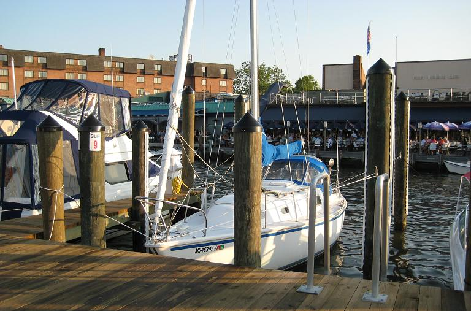
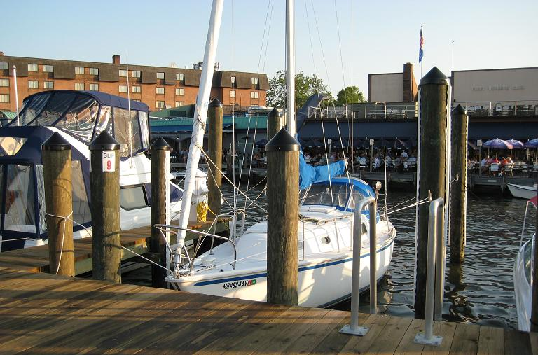
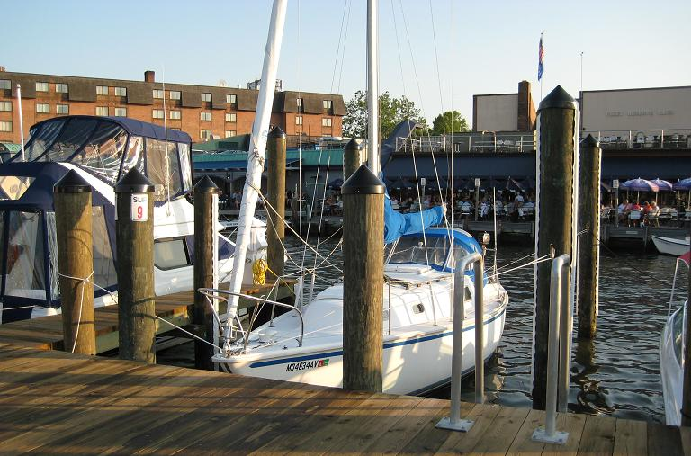
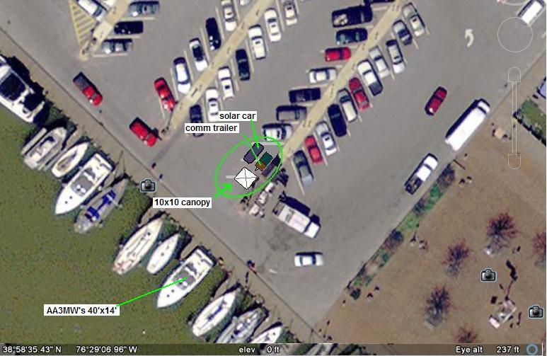

{kind=link}
{kind=link}
 

Amateur Radio Field-Day at Annapolis City Dock was an outstanding success. Our FD score was inversely proportional to our high score in talking to the public as we met with many boaters and interested kids and adults taking literature to find clubs and information. Boaters were particularly interested in HF. Field Day is an annual National event where Ham radio operators throughout the USA set up communications in the field under simulated emergency conditions.
APRS CQSRVR: Also for the first time this year, APRS has a global CQ SERVER that lets users send global CQ messages. THis makes it possible for individuals to send CQ's and group messages. See CQSRVR.
Click for larger left image. Click for larger right image
We had 4 stations. WB4APR's comm Trailer and AA3MW's 40' motor Yacht shown above
and a card-table-umbrella HF station for visiting operators (KB3KAK,N4GUN) and KB3NEU's sloop shown below.

The original Plan A,
had the tent closer to Market place, but
plan A2 consolidated the tent and trailer.
Plan B2 was on the point
but parking on the bricks was not allowed.
Plan D shown below, put us in the parking lot ($50 per space for the weekend) and
close to slip #14 necessary to hold AA3MW's 14' wide boat:


Plans for 2009! Next Year we want to encourage more operators to come on down with their man-portable gear and operate within the 1000' radius that constitutes a field day limit. Dozens of small sites have been located where individual operators can set up their man-portable COMMS equipment and show the public as they walk by on the sidewalk. Or pay to park and operate from the vehicle. See the Plans for FD 2009
The WB4APR equipment all ran on his Prius Solar Field Day power system
APPLICATION SUBMITTED: To see a copy of the Annapolis City Application, please download.
{kind=link}
{kind=link}
{kind=link}